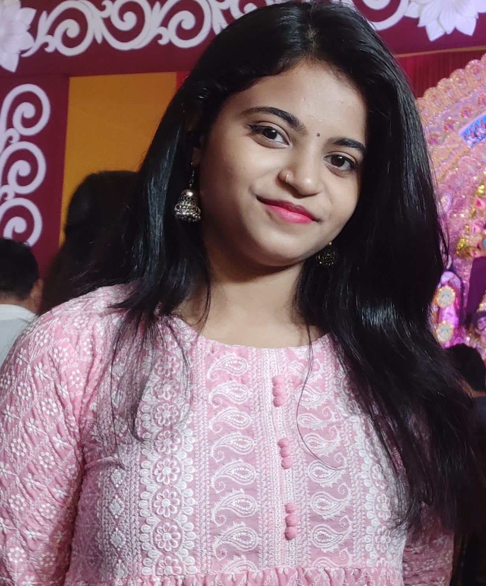

Professional Summary:
I'm currently a sophomore pursuing B.tech in Electronics and Communication with specialization in AI. I've done my internship specializing in Virtual
Reality with a primary project centered around WebVR Classroom.
I've been part of Media Team & Creative Team of my college fest.
I'm always eager to learn about new technologies and advancements in tech world.
Education:
- B.Tech in Electronics and Communication with specialization in AI - IGDTUW, Delhi (2022-2024)
Work Experience:
-
- Acquired foundational knowledge in the principles and concepts of Augmented reality and Virtual reality within the context of the emerging metaverse.
- Hands-on experience with Aframe in exploring and contributing to developing immersive WebVR content.
- Developed proficiency in 3D model creation using tools such as Blender & Unity, contributing visually appealing assets to virtual environments.
-
Media Team & Creative Team Coordinator - Taarangana
- Utilised photography and videography skills to capture memorable moments, creating engaging visual content for promotional purposes.
- Contributed to the success by creating visually impactful designs that attracted attendees and generated positive impressions
-
- Proficient in Canva, crafting polished posters, PowerPoint presentations, and Instagram Stories that align with society's standards.
Skills:
-
Soft skills
- Communication
- Team Work
- Leadership
-
Hard Skills
- C
- C++
- HTML
- Canva
- Figma
- Aframe
- Blender
- DSA
- DBMS
Projects:
- INFINIX is a WebVR classroom, a simulation of a traditional classroom setting where users can experience classroom like experiences but virtually from anywhere.
- Applied Afame, Blender & Unity, and HTML expertise to create a seamless, immersive VR environment.
- Leveraged blender for 3D modeling, contributing visually stunning assets and elements to virtual learning space.
Hobbies:
- Photography
- Painting
- Travelling
- listening to Music
- Learning new languages
- Watching series & movies
Connect with me: